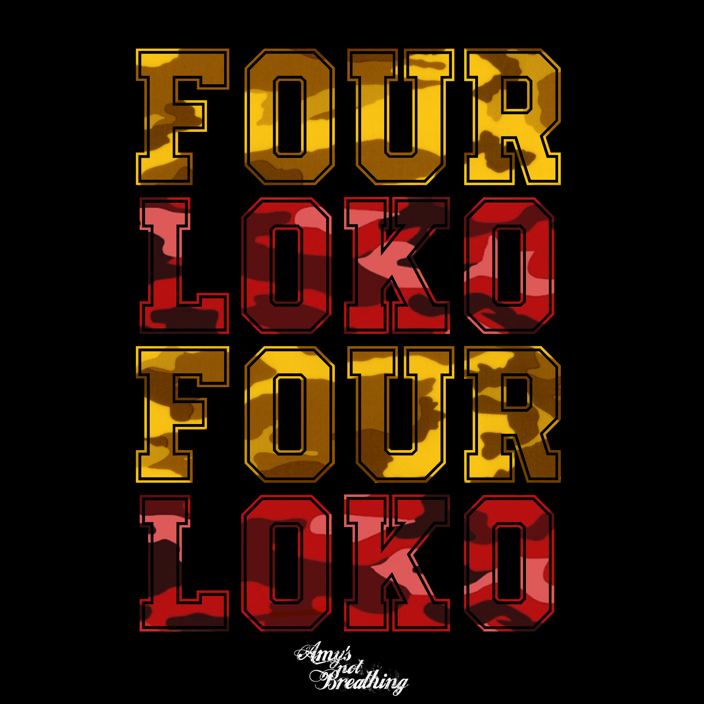
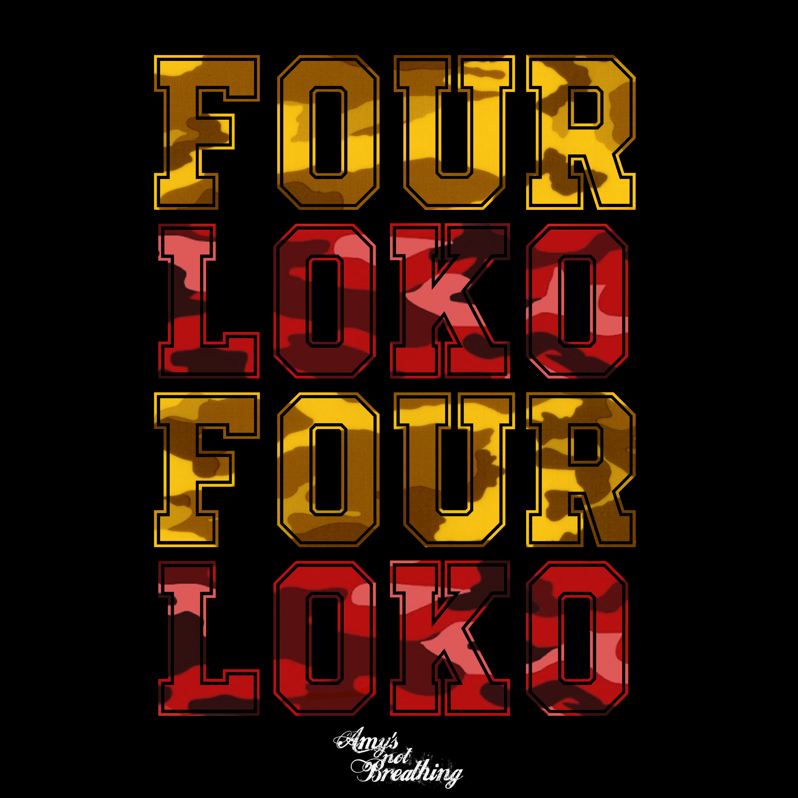

A little bit about myself
Greetings! Thank you for visiting my page. Here's the deal guys - I'm fun, energetic, outgoing, athletic, mathematical, creative and just straight up easy going. I don't want to come off as conceited or anything, but when I first meet people I am completely shy (those who know me already know this factor). Any who, I will start off with my interest and hobbies:
Things I dig:
That's a lot of stuff - my apologies! I'll tell you know a little bit about my background now. I was born and raised in Denver, Colorado. It was a great time living there and I hope to one day move back if I don't evidently fall in love with Houston. My family and I eventually moved to the famous known Alien City of Roswell, New Mexico where I then attended high school at Roswell High School. While in Roswell, NM, I was in a club called M.E.S.A. (Mathematics Engineering Science Achievement ) Club for 6 years. It was great - I don't mean to brag but my team and I took first place at state for four years in a row! Math has always been such a great passion of mine and so I've decided to pursue that degree. I've also been obsessed with designing, computers, and web development. Most of my knowledge comes from a school and work basis, but I always spend hours at home messing with my page to tweak it a little and eventually learn new skills. While doing my academic activities, I also was on the varsity soccer team. I got recruited to play Women's Soccer at McMurry University my senior year on scholarship. I accepted the offer and then did that for a couple years before moving back to New Mexico. The college soccer experience was unreal. One of the best times of my life.
I then moved back to New Mexico and attended the University of New Mexico to finish up my degree in Computational Mathematics and Computer Science - saved me money because it was in-state tuition! I joined an adult league soccer team for both women and coed there. It was just as fun as playing college soccer.
While in Albuquerque though, I was exposed to all of these wonderful craft breweries. They keep popping up everywhere in ABQ (Albuquerque)! Unfortunately, I was unable to visit them all, but I must say they were all pretty good! My favorite breweries along with their beers are:
Recent Career Work:
I worked as a Computer Consultant and a Design and Production Studio member for the University of New Mexico for the department of College of Education. My specific department was with the Center for Student Success. I assisted on a wide variety of technical issues to students, faculty, and staff for the Center for Student Success (CSS). I also provided basic troubleshooting of computer hardware, software, printers and projectors and support special projects in the CSS utilizing technical expertise and knowledge of the College of Education (COE). I demonstrated excellent customer service skills and interest in teaching, communicating, and furthering understanding of computer use specific to the systems utilized by the COE and CSS. I worked with our Network Systems Analyst and Support Analyst to resolve online tickets for technical issues and I administrate multiple COE accounts for troubleshooting, configuring, installations, etc. Lastly, I also work on a team to design images, flyers, posters, ID cards for advertisement and have helped code for our CSS Portal Website.
Thanks for taking the time to read my extensive bio! I am always available to chat; and for you Houston people, I also am a member of Flying Saucer's Beer Knerd membership so I am always down to grab a beer to put towards my card!
Live long and prosper!
My Skills
PC/Mac/Linux
Web Design
Photoshop/Illustrator/Gimp/Dreamweaver/Atom
Matlab/HTML(5)/CSS/JavaScript/jQuery/Bootstrap
Spanish (Bilingual)
Years
Projects Done
Happy Clients
Beer/Coffee
 
